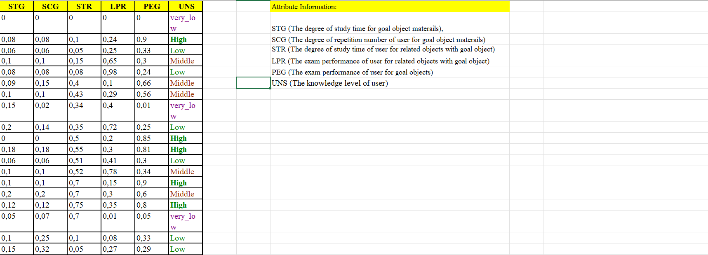

pip install widelearning
pip install numpy
pip install pandas
pip install requests
pip install tensorflow
pip install jupyter
jupyter notebook
import widelearning as wdl
1. Подготовка набора данных (датасета).
Для примера использован набор данных User Knowledge Modeling Data Set, который можно скачать по адресу:User Knowledge Modeling Data Set
Открытый в MS Excel файл выглядит следующим образом: Скопируем часть, содержащую данные, в новый файл формата csv и переместим столбец UNS (состоит из меток принадлежности к классам) в начало. Заменим разделитель целой и дробной части вместо запятой «,» на точку «.». Также необходимо разделитель столбцов поменять с «;» на «,». Иногда данные в csv файле могут быть после преобразований заключены в двойные кавычки. Необходимо также удалить из итогового файла этот знак.
Получившийся файл, открытый в текстовом редакторе: